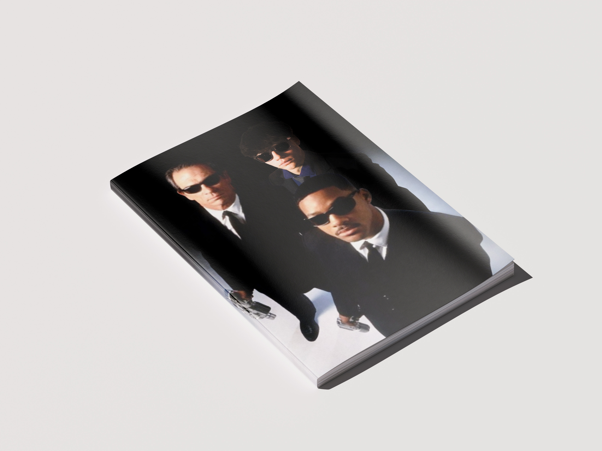
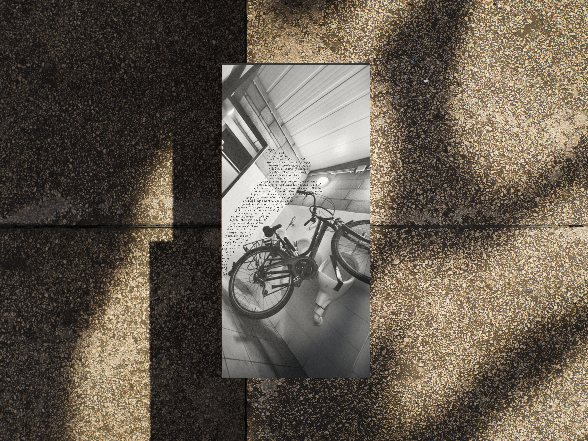
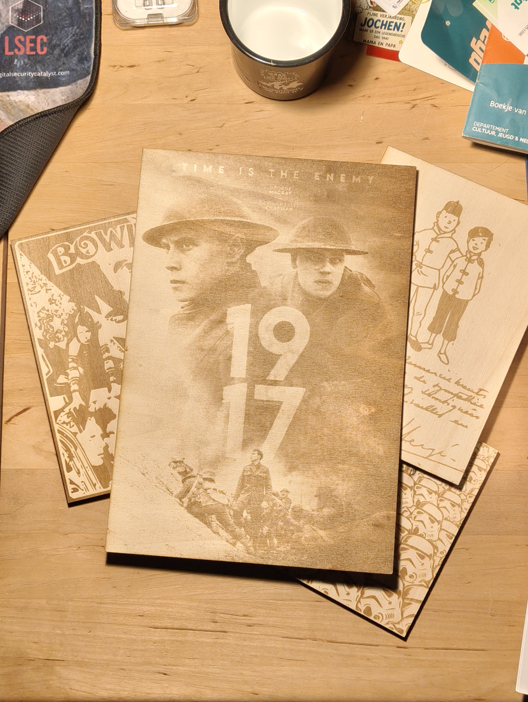
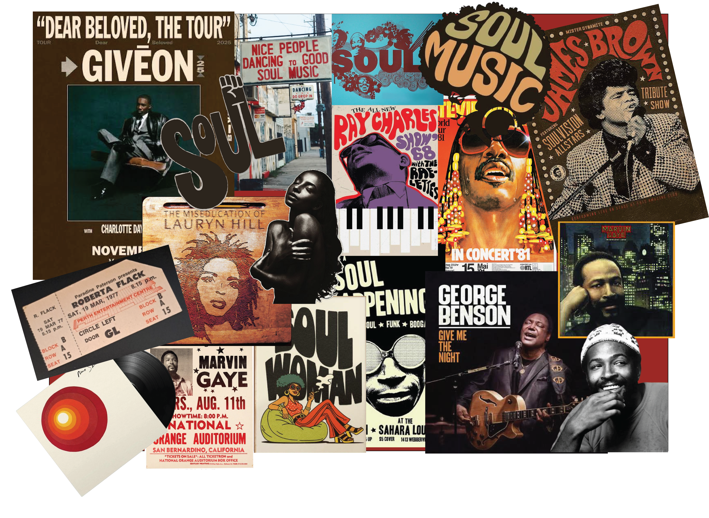
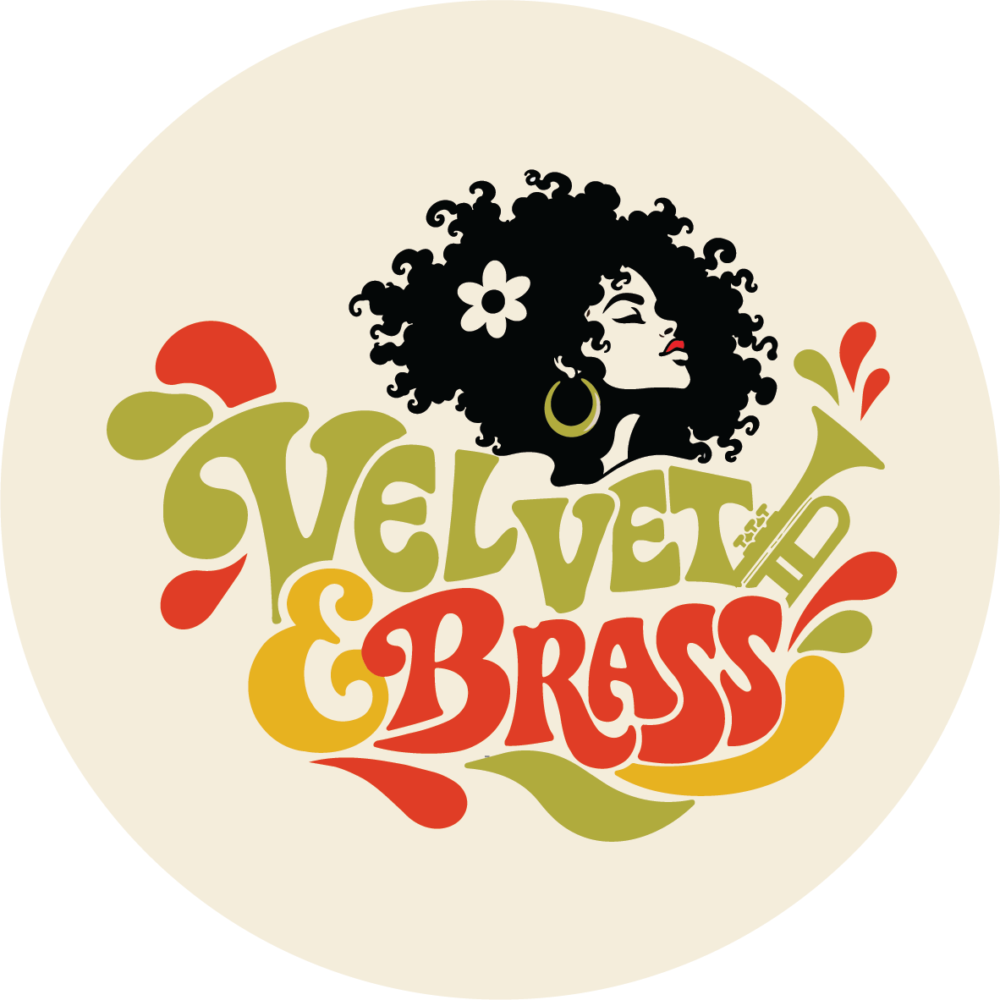

Men in Black
I blended myself into a still from Men in Black, matching the lighting, colours and perspective so I look like part of the original scene.
Used: Photoshop.
What I do, the software I use and what I have made

I blended myself into a still from Men in Black, matching the lighting, colours and perspective so I look like part of the original scene.
Used: Photoshop.

I removed myself from a photo and rebuilt the empty space as a word cloud, so the text takes my place in the scene.
Used: Photoshop and Illustrator

I guide and help organise camps during the Easter and summer holidays for children from the 3rd year of primary school up to the 3rd year of secondary school, focused on STEM activities.
Used: laser cutting, 3D printing.
A short look at what I am working on for my final project.


